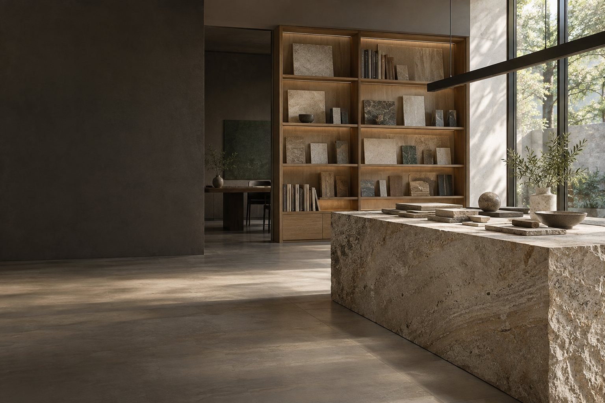

素材の選び方
最初に知っておきたい判断基準と、目的に合った選び方を整理します。
詳しく見る →
会員制Web制作のご提案用サンプル。業種未開示のため、素材・設計の専門情報サイトとして仮構成しています。
会員向け資料を見る ↗必要な情報に、迷わずたどり着けること。専門知識が、日々の判断に使えること。公開コンテンツから会員限定資料まで、読み手の目的に合わせて整理します。
公開されている情報から、必要なテーマを見つけます。
具体的な条件や用途を整理し、比較・検討を進めます。
不明点をまとめ、担当者への相談につなげます。
いいえ。募集内容をもとにした架空の提案用モックです。
写真はすべてAI生成のイメージです。
実際の申し込みやデータ送信は行いません。
ページ幅に合わせてレイアウトが変わります。
下の更新プレビューで見出しの変更をお試しいただけます。
入力情報の保存や外部サービスへの接続は行いません。
ご相談の前に、気になるテーマや必要な情報を整理できます。
画面で操作を体験する ↗メール登録・ログイン・会員限定記事・管理画面の構成を想定。ここでは会員画面の見え方を切り替えられます。本番はサーバー側で閲覧権限を制御します。
ボタンで会員表示へ切り替わります。実際の登録・認証は行いません。
用途・素材・納期の3つの視点から、検討事項を確認できます。
入力した見出しを、右のプレビューへ反映します。ページを再読込すると元に戻ります。
本ページは提案段階の仮構成です。実際の業種・原稿・素材・CMS仕様を確認して、必要な範囲と納品条件を定めます。